If the user is yet to submit the thesis proposal, the message as shown in the figure below will be displayed to the user.
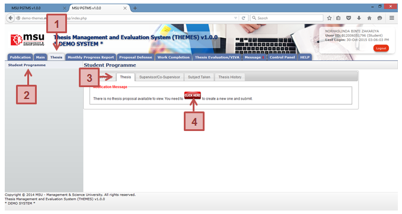
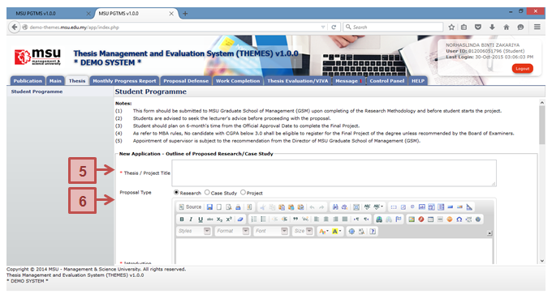
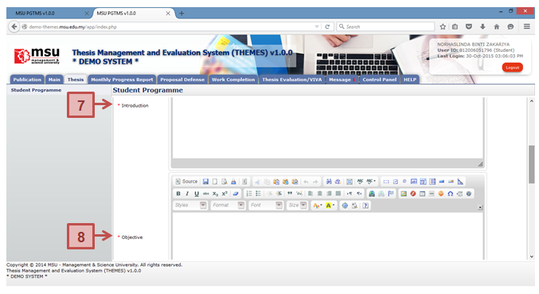
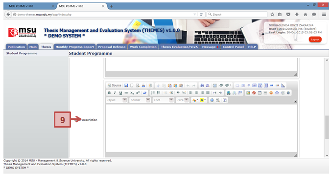
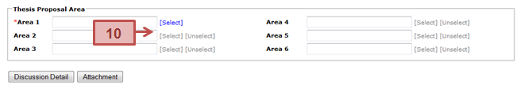
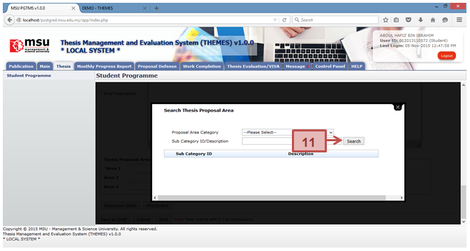
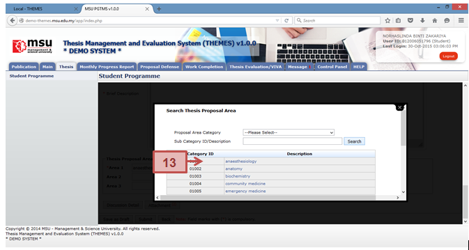
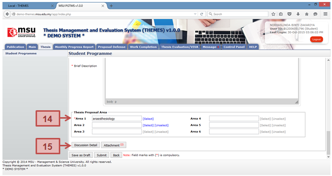
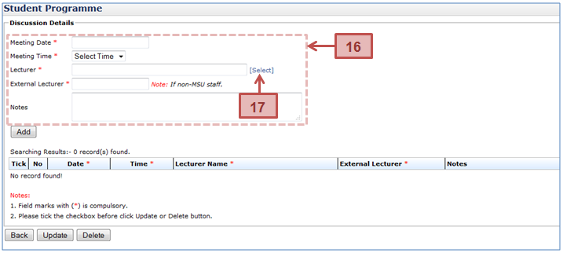
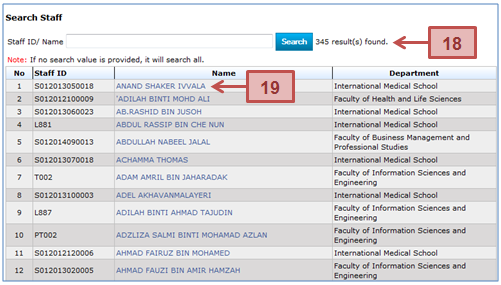
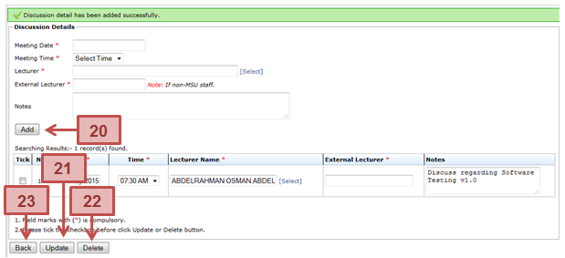
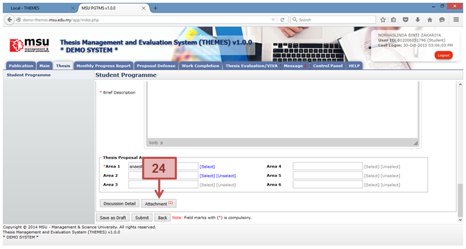
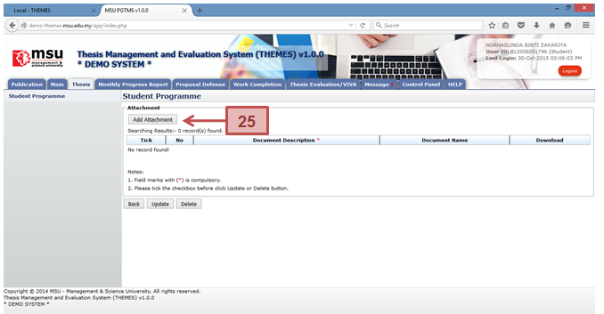
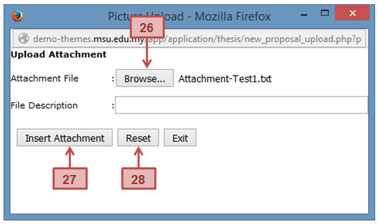
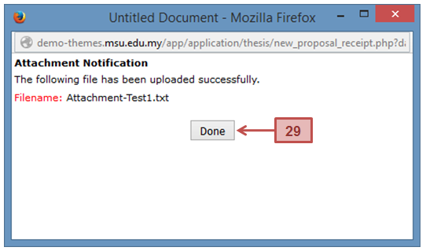
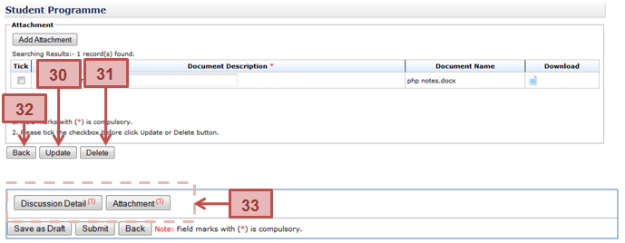
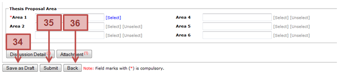
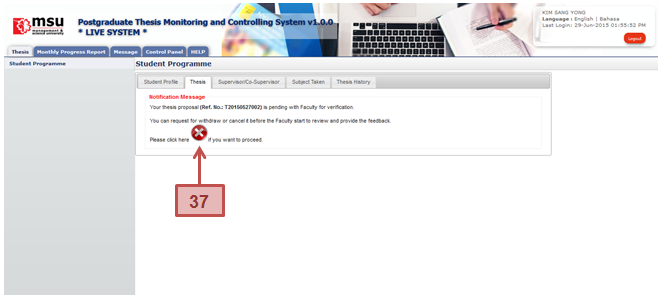
Figure 12: First Time Proposal Preparation
Prerequisite
The student has yet to submit the thesis proposal.
Steps
- Click on the Thesis Tab on the Top Panel.
- Click on the Student Programme menu on the Left panel.
- Click on the Thesis Tab on the Student Programme page to create the thesis proposal.
- Click on the Click Here button to open the proposal page.
- Enter the Thesis / Project Title
- Select Proposal Type
- Enter the necessary description into the Introduction
- Enter the necessary description into the Objective
- Enter the necessary description into the Brief Description
- Minimum 1 Thesis Area need to be selected to associate with the proposal. That will also enable the Faculty to assign the right and suitable Supervisor / Co-supervisor to consult with the student. Click Select link above to choose thesis proposal area.
- On Proposal Area page, the user can list all the available area by clicking the Search button without specifying the searching criteria.
- The user also can list the specific area by specifying the searching criteria like Proposal Area Category or Sub Category ID / Description.
- The user also can select the specific proposal area from the list populate above.
- The selected Thesis Proposal Area will be populated into the Thesis Proposal Area table as shown above.
- The user can add the discussion detail which has been done with the lecturer. Click the Discussion Detail button.
- Enter the discussion detail such as Meeting Date, Meeting Time, Lecturer or External Lecturer and Notes. All the field mark with asterisk (*) is compulsory.
- To select the lecturer participated in the discussion, click Select link to open the Search Staff page.
- On the Search Staff page, the user can list all the lecturer available without specifying the searching criteria like Staff ID/Name. Or the user can search the lecturer by specifying the search criteria.
- Based on the search result list, click on the selected lecturer to pick his/her name so that it will be populated into the Discussion Detail list.
- Once all the required information has been provided, then click Add button to add it into the discussion list.
- To change or update the added record, user can change it on the particular record, tick the checkbox and click Update Button.
- To delete the added record, tick the checkbox, and click Delete button to delete it.
- Click Back Button to go back to the previous page.
- The user can add attachment to the proposal via the Attachment button. Click the button to open the Insert Attachment page.
- Click Add Attachment button and popup window will be appeared as shown below.
- Click Browse button to browse the file and select it. The selected filename will be displayed beside the Browse button. File Description is optional.
- Click Insert Attachment button once done.
- Reset button is to reset the entries of Attachment File and its File Description.
- Click Done button to acknowledge the insertion of the attachment.
- To Update Document Description, click on the field and change the description. Then tick the checkbox on the left side and click Update button to update it.
- To delete attachment, tick the checkbox and click the Delete button to delete it.
- Click Back Button to go back to the previous page
- After the Discussion Detail and Attachment have been added, the number of added record will be shown on its button respectively.
- The user can save the proposal temporarily via Save as Draft button in case there is a need to review and update it later.
- If it is final, the user can submit it to the Faculty and Senate for thesis approval via Submit button. The email notification will be sent to the faculty
- Click Back button if to return back to Student Programme page.
- If the student needs to withdraw or cancel the newly submitted proposal, it can be done via cancel button as shown above. Please refer next section on how to cancel the proposal.
Created with the Personal Edition of HelpNDoc: Easily create Web Help sites